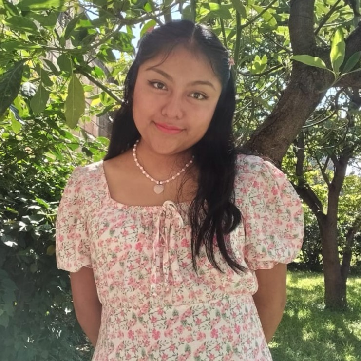

Dulce Yanet Tomas Juarez
 ¡Hola! Me llamo Dulce Yanet Tomas Juarez, tengo 21 años y actualmente estudio Diseño Gráfico en la Universidad Benemérita Universidad Autónoma de Puebla, me encuentro en 8 semestre a casi un año de graduarme. Me apasiona el mundo de la creatividad y el arte visual, aunque debo de confesar que no siempre soy buena; no obstante eso no es un limitante pues siempre ando buscando nuevas formas de expresar ideas a través del diseño. Por eso mismo que no me siento segura de ser muy buena diseñando me inclino a la Mercadotecnia, considero que desarrollar estrategias de venta se me da mejor y soy buena agregando un valor agregado a productos ya existentes para aumentar sus ventas o reconocimientos. Además de mi amor por el diseño, una de mis mayores pasiones es bailar ritmos latinos y viajar. La música y el baile son una parte esencial de mi vida, ya que me permiten conectar la alegría del movimiento. Soy una persona creativa, entusiasta y bastante sensible en busca de nuevas experiencias que me inspiren tanto en el diseño como en el baile.